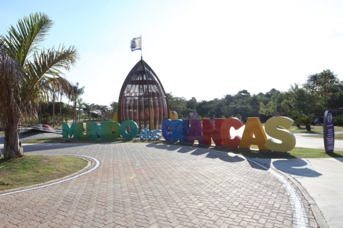

MUNDO DAS CRIANÇAS
Com uma área de aproximadamente 670mil metros quadrados, o mundo das crianças é um parque público gratuito a céu aberto, que conta com estações de brinquedos, paredes de escalada, quadras esportivas, pista de skate, áreas verdes para lazer, cultura e aprendizagem, fontes interativas e trilhas. É administrado pela DAE Jundiaí e tem como objetivo de garantir um espaço destinado à preservação ambiental, ao aprendizado e à diversão focado nas crianças.
Atrações: Parkour, Quadras de tênis, Quadra de tênis de praia, Quadras de basquete, Quadras de areia, Quadra de grama sintética, Mirante, Parques infantis, Parede de escalada, Espécies de árvore, Fontes de água, Casa da árvore, Foguete, Cápsula do tempo, Ciclovia, e Pista de Skate (em reforma).
O que levar: Garrafinha de água (bebedouros inativos em razão da pandemia), Boné e protetor solar, Troca de roupa e toalhas. Proibida a entrada de animais.
Comida: O mundo das crianças conta com uma lanchonete ativa que vende salgados assados, salgadinhos, água, refrigerante, sucos, água de coco e sorvetes. É permitido levar lanche de casa.
- Endereço: Rodovia João Cereser, Pista Sul – Km 64+400 - Pinheirinho, Jundiaí - SP
- Telefone: (11) 4522-0499
- E-mail: contato@mundodascriancasjundiai.com.br
- Site: https://mundodascriancasjundiai.com.br/
- Horário de Funcionamento: Diariamente das 7h às 17h.(entrada até as 16 horas). Para visitar, é necessário agendamento prévio.
MUNDO DAS CRIANÇAS
O Mundo das Crianças está localizado no Endereço: Rodovia João Cereser, Pista Sul – Km 64+400 – Bairro Pinheirinho – Jundiaí.